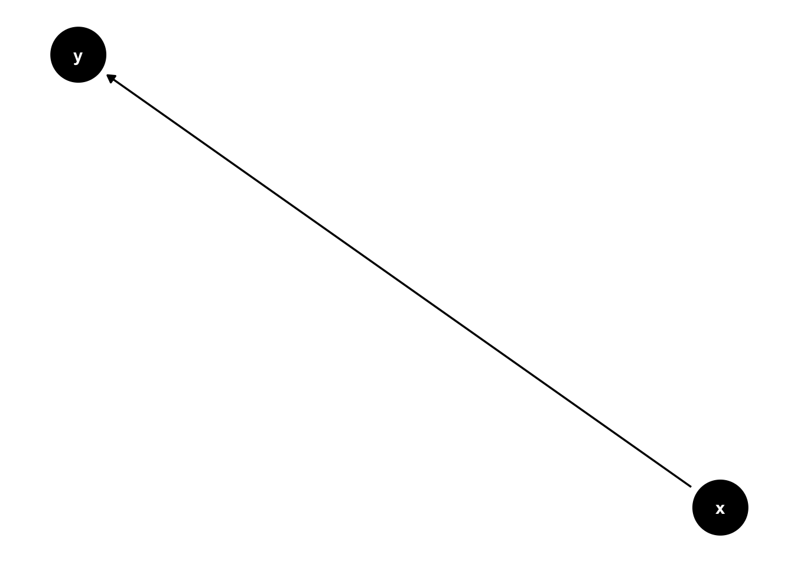
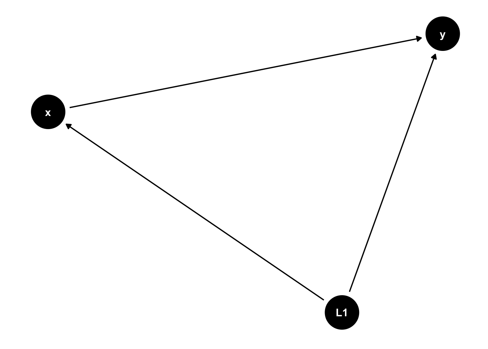
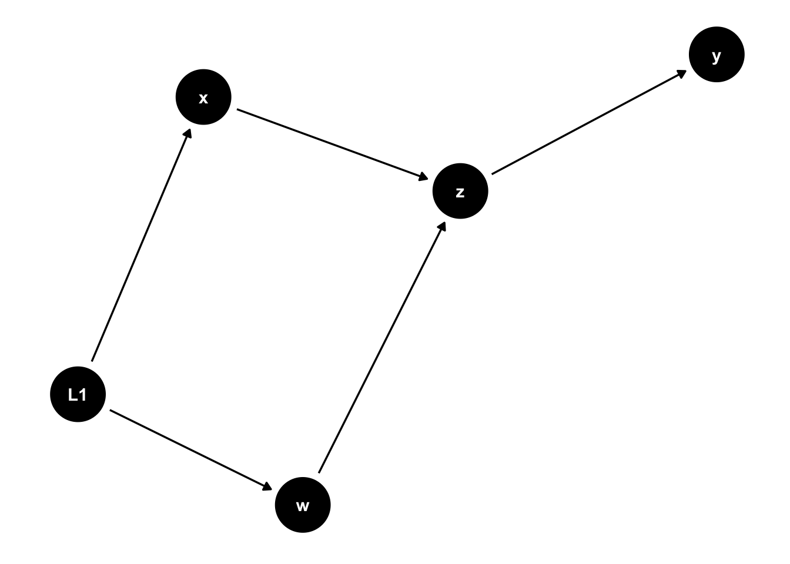

Random assignment: Use R to randomly assign units/observations to a group(s)
Test for balance after randomization, build a table to show whether your sample is balanced or not
Random Assignment
Assign 4 observations to 2 groups: treatment and control.
#install packages you'll need: ##install.packages('randomizr') //site where I learned randomizr https://cran.r-project.org/web/packages/randomizr/vignettes/randomizr_vignette.html##install.packages("expss")##install.packages("vtable") //site where I learned vtable https://cran.r-project.org/web/packages/vtable/vignettes/sumtable.htmllibrary(randomizr)library(expss)
Loading required package: maditr
To get total summary skip 'by' argument: take_all(mtcars, mean)
#generate a dataset with four observationsdf1 <-data.frame(id=c(1:4))#fix the rownamesrownames(df1) <-NULL#count the number of observationsN <-nrow(df1)#set seed for reproducabilityset.seed(4765839)#simple random assignment: flip a coin for each observationZ1_1 <-simple_ra(N = N, prob_each =c(0.5,0.5), conditions=c("treatment", "control"))table(Z1_1)
Z1_1
treatment control
1 3
#complete random assignment: can specify how many observations are assigned to each groupZ1_2 <-complete_ra(N = N, m_each =c(2,2), conditions=c("treatment", "control"))table(Z1_2)
Z1_2
treatment control
2 2
Assign 9 observations to 3 groups: treatment 1, treatment 2, and control.
#generate a dataset with nine observationsdf2 <-data.frame(id=c(1:9))#fix the rownamesrownames(df2) <-NULL#count the number of observationsN <-nrow(df2)#set seed for reproducabilityset.seed(583641)#simple random assignment: flip a coin for each observation (default is equal weight assigned to each group)Z2_1 <-simple_ra(N = N, num_arms =3, conditions=c("treatment 1", "treatment 2", "control"))table(Z2_1)
Z2_1
treatment 1 treatment 2 control
5 2 2
#complete random assignment: specify number of groups (default is that equal number assigned to each group)Z2_2 <-complete_ra(N = N, num_arms =3, conditions=c("treatment 1", "treatment 2", "control"))table(Z2_2)
Z2_2
treatment 1 treatment 2 control
3 3 3
Checking for balance
Now let’s think about a real-world example, assigning random assignment of improved stove installations at the community level in Tanzania. We will need two groups, a treatment group (who will receive the stove installations) and a control group (who will not receive until after the study). We start with a list of 100 villages where the stove building organization would like to operate.
First we will construct this dataset.
library(randomizr)library(expss)#generate a dataset with 100 observationsvillages <-data.frame(id=c(1:100))#fix the rownamesrownames(villages) <-NULL#count the number of observationsN <-nrow(villages)#set seed for reproducabilityset.seed(8675309)#genereate some variables to describe different village characteristics##fuelwood use (kg/week)villages$wood_use_n <-rnorm(100, mean =3, sd =2)villages$wood_use <-pmax(villages$wood_use_n,0)##average household size (number of people/household)villages$hh_size_n <-rnorm(100, mean =6, sd =3)villages$hh_size <-pmax(villages$hh_size_n,1)villages$hh_size <-round(villages$hh_size, digits =0)##total population (number of people)villages$tot_pop <-rnorm(100, mean =600, sd =250)villages$tot_pop <-round(villages$tot_pop, digits =0)##distance to main road (km)villages$dist_road <-runif(100, 0, 20)##employment rate (% of population employed outside subsistence farming)villages$emp_rate <-runif(100, 0, 1)#drop un-needed variablesvillages =subset(villages, select =-c(wood_use_n, hh_size_n))
Now we have our dataset with 100 village-level observations and 5 variables describing different village characteristics.
#randomly assign villages to treatment and controlvillages <-within(villages,{ treat <-complete_ra(N = N, num_arms =2,conditions =c("treatment", "control"))})villages <- villages %>%mutate(treat_n =case_when(grepl("control", treat) ~"0",grepl("treatment", treat, ignore.case =TRUE) ~"1"))#check for balance across treatment and controllabs <-c('fuelwood use (kg/week)','average household size (number of people/household)','total population (number of people)','distance to main road (km)','employment rate')#summarize the values for each group and run an F-test to test for difference in means between treatment and control groups (results are equivalent to a t-test but an F test is run since it also works if there are more than two groups)sumtable(villages, vars =c('wood_use', 'hh_size', 'tot_pop', 'dist_road', 'emp_rate'), group ='treat_n', group.test =TRUE, labels = labs)
Summary Statistics
treat_n
0
1
Variable
N
Mean
SD
N
Mean
SD
Test
fuelwood use (kg/week)
50
3.1
1.7
50
3.2
1.8
F=0.014<sup></sup>
average household size (number of people/household)
Run regressions with squared terms and calculate marginal effects in R
Run regressions with interaction terms and calculate marginal effects in R
For this section we are going to use data on restaurants and their health inspections and scores from Nick Huntingon-Klein’s causaldata R package. This example is discussed in Chapter 13 of his book. First you will need to load the packages we’ll use. You can also set your working directly so that any output files are saved in a folder you specify.
#install packages you'll need but don't yet have installed#install.packages('modelsummary') #install.packages('causaldata') //This is Nick HK's package where he has stored all the data he uses for the examples in his book#install.packages('margins')#load the packageslibrary(tidyverse); library(modelsummary); library(causaldata); library(vtable); library(margins)
Linear Regression
First we will load our data into a data frame, which we’ll call “res.” We’ll create a variable that counts the number of locations, or branches, each restaurant in our data has. And finally we’ll make a simple summary statistics table to get a sense of the number of observations, means, and distributions of each variable we will be using below.
#Load data file into an R Studio data frame. These data contain information on restaurants and health inspections.res <- causaldata::restaurant_inspections#Create a variable that shows the number of locations that each restaurant has; use mutate to count the number of rows with each restaurant nameres <- res %>%group_by(business_name) %>%mutate(NumberofLocations =n())#Let's get a sense of what our data contains, using sumtablesumtable(res, vars =c('inspection_score', 'NumberofLocations', 'Year', 'Weekend'), group.test =FALSE)
Summary Statistics
Variable
N
Mean
Std. Dev.
Min
Pctl. 25
Pctl. 75
Max
inspection_score
27178
94
6.3
66
90
100
100
NumberofLocations
27178
39
47
1
17
44
349
Year
27178
2010
5.9
2000
2006
2016
2019
Weekend
27178
... No
26968
99%
... Yes
210
1%
For this analysis, our outcome variable will be inspection_score, which records the result of each inspection, on a scale from 0-100. We will first regress this outcome on the NumberofLocations alone (model 1) and then on both NumberofLocations and Year (model 2). The below equation represents the regression in model 2.
The results of these regressions are shown in a table, that is output as an html file into our working directory.
#Regress inspection score on the number of locations; use the lm() function, with ~ telling us what the dependent variable varies overm1 <-lm(inspection_score ~ NumberofLocations, data = res)#Now add year as a control; use + to add more terms to the regressionm2 <-lm(inspection_score ~ NumberofLocations + Year, data = res)#Show these two regression results, m1 and m2 in a table; using msummary #Give msummary a list() of the models we want in our table and save to the file "regression_table.html"#can save as different file types, use 'help(msummary)' to see optionsmsummary(list(m1, m2),stars=c('*'= .1, '**'= .05, '***'= .01),output='regression_table.html')#Default significance stars are +/*/**/*** .1/.05/.01/.001. Social science#standard */**/*** .1/.05/.01 can be restored with stars option
Non-linear Relationships
The above regressions impose the restriction that both NumberofLocations and Year have linear relationships with the inspection score. Below we allow for a non-linear relationship between NumberofLocations and inspection score by including both NumberofLocations and the squared value of NumberofLocations in the regression. The marginal effect of a one unit increase in NumberofLocations on inspection score now can vary based on the level of NumberofLocations. To calculate, for example, the effect of increasing the number of locations from 100 to 101, use the margins package.
#Use I() to add calculations of variables, here we include a squared term to test for non-linear relationshipm3 <-lm(inspection_score ~ NumberofLocations +I(NumberofLocations^2) + Year, data = res)#Print the results to a tablemsummary(m3, stars =c('*'= .1, '**'= .05, '***'= .01))
(1)
(Intercept)
416.416***
(11.693)
NumberofLocations
−0.152***
(0.002)
I(NumberofLocations^2)
0.000***
(0.000)
Year
−0.158***
(0.006)
Num.Obs.
27178
R2
0.215
R2 Adj.
0.214
AIC
170246.2
BIC
170287.2
Log.Lik.
−85118.080
F
2473.774
RMSE
5.55
* p < 0.1, ** p < 0.05, *** p < 0.01
#Now the relationship between location and inspection score is a function of the number of location#To know the effect of an increase in one location at a certain number of location, use margins#variables is the variable we want the effect of and at is a list of values to set before looking for the effectm3 %>%margins(variables ='NumberofLocations',at =list(NumberofLocations =100)) %>%summary()
factor NumberofLocations AME SE z p lower
NumberofLocations 100.0000 -0.0707 0.0009 -81.0708 0.0000 -0.0724
upper
-0.0690
factor NumberofLocations AME SE z p lower
NumberofLocations 50.0000 -0.1111 0.0013 -85.6182 0.0000 -0.1136
upper
-0.1085
#The AME (average marginal effect) is what we are interested in; the std error (SE) is also reported
Interaction Terms
Lastly, we allow for the relationship between NumberofLocations and inspection score to vary based on whether or not the inspection was conducted on a weekend or not. We do this by regressing inspection score on NumberofLocations, Weekend, and an interaction of the two variables. Weekend is a binary variable that takes the value of zero if the inspection was conducted on a weekday and 1 if it was conducted on a weekend day. The equation looks like this:
We can see the effect of NumberofLocations on inspection score on a weekday by using margins or by looking at the coefficient on Weekend. The coefficient on Weekend plus the coefficient on the interaction term tells us the effect when the inspection is on a weekend day.
#Use * to include two variables independently plus their interaction#(: is interaction-only, we rarely use it)m4 <-lm(inspection_score ~ NumberofLocations*Weekend + Year, data = res)# Print the results to a tablemsummary(m4, stars =c('*'= .1, '**'= .05, '***'= .01))
(1)
(Intercept)
247.615***
(12.373)
NumberofLocations
−0.038***
(0.001)
WeekendTRUE
1.765***
(0.498)
Year
−0.076***
(0.006)
NumberofLocations × WeekendTRUE
−0.023*
(0.014)
Num.Obs.
27178
R2
0.080
R2 Adj.
0.080
AIC
174531.9
BIC
174581.2
Log.Lik.
−87259.946
F
594.105
RMSE
6.00
* p < 0.1, ** p < 0.05, *** p < 0.01
#Now we are allowing the relationship between locations and inspection to vary based on weekend#Use margins to calculate the effect of locations on the weekend#variables is the variable we want the effect of and at is a list of values to set before looking for the effectm4 %>%margins(variables ='NumberofLocations',at =list(Weekend =TRUE)) %>%summary()
factor Weekend AME SE z p lower upper
NumberofLocations 1.0000 -0.0604 0.0135 -4.4672 0.0000 -0.0869 -0.0339
factor Weekend AME SE z p lower upper
NumberofLocations 0.0000 -0.0375 0.0008 -47.7167 0.0000 -0.0391 -0.0360
#The AME (average marginal effect) is what we are interested in; the std error (SE) is also reported
Directed Acyclic Graphs (DAGs)
Learning Outcomes
Draw a DAG in R
Use options like “_canonical” and labels to improve the look of your DAGs
Drawing DAGs in R
We’ll be using ggdag to draw our DAGs, which you can learn about here. We will only cover the most basic parts of the package, but there are many more options for designing your DAGs, which can be found on the website linked above.
Let’s set up our R script and start with a very simple DAG, showing a direct causal relationship between x, our treatment variable, and y, our outcome variable.
#install packages you'll need but don't yet have installed#install.packages('ggdag')#install.packages('ggplot2') library(ggdag)
Attaching package: 'ggdag'
The following object is masked from 'package:stats':
filter
library(ggplot2)#set theme of all DAGs to `theme_dag()`theme_set(theme_dag())#Start with two variables and a direct relationship between x, our treatment, and y, our outcomedagify(y~x) %>%ggdag()

Now assume there is an unobservable variable that causes both x and y to move together. Some would prefer to draw this relationship between x and y using a bi-directional arrow, but that is not allowed in DAGs. Instead, using the _canonical option will produce a latent variable.
#Now assume there is an unobserved variable, L1, that causes both x and ydagify( y ~ x, y ~~ x) %>%ggdag_canonical()

We can add more variables and relationships abnd indicate which are our treatment and control variables.
#Now let's add some more variables to make it more complexdag1 <-dagify( y~z, z~x+w, x~~w,exposure ="x",outcome ="y")ggdag_canonical(dag1)

A Research Example
Let’s start a DAG linking protected areas, our treatment, with poverty, our outcome. This is based off of Ferraro and Hanauer 2014.
Labels allows us to label our notes with more information than just a letter. In the example we drew above tourism is a mediator, a mechanism through which protected areas affect poverty, and corruption is a confounder. What else might be missing from this DAG?